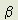

Aether Science Papers: Part I: The Creative Vacuum
Pages 54-59
Copyright © 1996 Harold Aspden
SOME CRITICAL REMARKS
Just in case, at this stage, you are asking yourself why, if what I am offering by my theory is so wonderful, the physics community has not responded in an enthusiastic way, I ought to offer you an explanation. It is because I did not sit in one of those academic compartments occupied by theoretical physicists who enjoy the benefit of state funding allocated to coordinated research within such compartmented peer groups.
There is a strong reaction aimed at repelling all who try to intrude into the private territory claimed by such groups. The weapons used are silent but effective. One's original ideas are simply rejected under the cloak of referee anonymity or, if they do somehow penetrate into printed form in journals which are not deemed to be 'mainstream' they are just ignored. Indeed, papers in many non-mainstream journals are excluded from inclusion in the abstracted science literature and so avoid citation record: they are lost forever! There is one other weapon that is brandished in those rare instances where the intruder does penetrate the barriers, as by getting a point across in a Letter to the Editor which refers to the writings of those who have found favour. It is the weapon of public scorn and ridicule. Do you wish me to quote an example to support that assertion? Well, yes, I will even give you an example pertaining to that anomalous magnetic moment of the electron, my non-QED derivation of the g/2 factor.
I had drawn attention to this in a Letter to the Editor as published in American Journal of Physics, v. 54, p. 1064 (1986) and, some few months later, I found the following Letter to the Editor had appeared in July 1987 in volume 55 at pp. 584-585.
"PI IN THE SKY
H. Aspden's [1] amusing "unbelievable" formula for g/2 reminds me of Ramanujan's remarkable number:
(2143/22)1/4 = 3.14159265258.. (to be compared with (pi) = 3.14159265358..)
The agreement with (pi) is to 300 parts in a trillion, a factor 10 less spectacular than Aspden's agreement with QED, but, like his, still well within the error of even the most careful measurements of the circumference and diameter of the very finest physical circles. Should one hope that a future theory will confirm that (pi) is indeed equal to (2143/22)1/4 thereby freeing us from the need to compute higher and higher order terms in any of the many tedious series mathematicians have had to resort to in these unenlightened times? Ramanujan's approximation to (pi) offers a rather more transparent example of an unbelievable formula against which to assess the validity of one's amazement at Aspden's. Speaking for myself, I'm a little surprised. But not at all astonished.
[1] H. Aspden, Am. J. Phys. v. 54, p. 1064 (1987).
Aspden says there is a theoretical model behind his formula, but he invites the reader to consider the result in and of itself, 'without further elaboration' and it is in that spirit that I offer this reaction."
N. David Mermin
Department of Physics
Cornell University
Ithaca, NY 14853-2501
Now, it may be that David Mermin was simply seeking to amuse the many physicists in USA who would read this contribution. I had said, in effect: "Look, you are all told that QED gives wonderful quantitative results which can explain the anomalous properties of the electron with such remarkable precision that it convinces you to accept QED principle, but here is a very simple formula that serves the same purpose just as well and which is very simple and has an equally simple supportable physical basis."
In the event, David Mermin had implied that I was merely 'playing with numbers', but he had seemingly not taken account of the fact that I had presented a formula which gave the same result as QED whatever the ultimate value of the fine-structure constant  . I gave a specific case, showing that the formula was the same as the QED result, even if ()-1 were 200 rather than a little above 137. I hinted that I might have discovered by my wave-resonance derivation something bearing upon the identity or wave-particle duality that had come from the introduction of quantum theory into electromagnetic energy transfer processes.
. I gave a specific case, showing that the formula was the same as the QED result, even if ()-1 were 200 rather than a little above 137. I hinted that I might have discovered by my wave-resonance derivation something bearing upon the identity or wave-particle duality that had come from the introduction of quantum theory into electromagnetic energy transfer processes.
I still do not see how this has any connection with the subject of Ramanujan's formula for (pi), ( as quoted below), nor, I presume, had Ramanujan derived his formula from a genuine study of the geometric characteristics of a circle.
as quoted below), nor, I presume, had Ramanujan derived his formula from a genuine study of the geometric characteristics of a circle.
However, I cannot just point my finger at David Mermin and say that his 'ridicule' has destroyed interest in my own scientific proposition, because, since that formula of mine was published not one single enquiry has been addressed to me asking how I deduced the formula. David Mermin himself could have written to ask if, in fact, he really had doubts and was at all interested.
So you must draw your own conclusions. Do those, including perhaps your goodselves, who read about physics generally, really care enough to ask questions to find answers to doubts about what is being told, or are they (and you) merely living a passive role expecting others to select, inform and amuse?
Evidently, the world of physics does not conduct itself in the way those who feed it with public funding have a right to expect. It is a world which, so far as I can see, bestows its favours amongst its own members with no tolerance of any would-be intruder whose only motivation is to interest that community in something discovered outside its closed ranks.
If you, the reader, think I am merely exploiting one isolated example in referring to David Mermin, then do refer to pages 160 to 164 of B. W. Petley's 1985 book 'The Fundamental Physical Constants and the Frontier of Measurement', as published in U.K. by Adam Hilger, the publishing house of the Institute of Physics.
He explains how 'it is not too difficult to synthesize an eight digit decimal number by combinations of the integers 2, 3 and 5 with ' and he quotes a Physics Today article in 1971 by Roskies and Prosen and one in 1971 by Robertson in Physical Review Letters on the same point. The gist of this quotation concerned the efforts of record aimed at deriving theoretical values for that constant ()-1 and also

, here used as the proton-electron mass ratio.
In the paragraph of Petley's book just preceding those comments, Petley made the following statement:
"No doubt the theoretical attempts to calculate the value of and will continue - possibly with a Nobel prize winning success. Aspden and Eagles (1972) obtained:
()-1 = 108(8/1843)1/6 "
This was a very curious observation, seemingly ambiguous in its context, given that the following paragraph harped back to the 'numbers game' of those who waste time trying to discredit genuine theoretical effort.
In Table 5.3 on page 161 of his book Petley had listed 6 theoretical expressions for ()-1, dating from 1914 to 1972, including one by Eddington in 1930 giving 137 exactly. The sixth entry in the list was 137.035915, which was this author's value. A seventh entry dated 1973 was the then measured value, stated as 137.03604(11). A separate listing gave three entries for , the proton-mass ratio, dating from 1951 to 1969, but, sadly, it seems that Petley had not seen this author's derivation [3] of the proton-electron mass ratio which was published in a mainstream physics periodical in 1975, as otherwise he would no doubt have included that also in his tabulation. That theoretical derivation of was in full accord with the measured value, even though the latter was known to part per million precision and it was based on the same theoretical principles as applied to ()-1. I may add here that, as you read through the fourteen papers which follow these remarks, you will be shown how these precise theoretical values for ()-1 and are derived.
Here, I mention further that Brian Petley was writing on the subject on which he was an expert, being a scientist with the National Physical Laboratory in England. I further note that my coauthor on the 1972 paper about the derivation of ()-1 and also on the 1975 derivation of was employed by the Australian CSIRO at their National Measurement Laboratory and, indeed, these two papers [2, 3] had been submitted for publication with the supporting approval of the Director of that Australian government laboratory.
So, I trust I will not be judged as being a little unreasonable in suggesting that all is not well in our scientific world. Certainly, there is no room for the free-thinking person who has ideas that differ from those prevailing within an institutional research project.
I hope that what has been outlined so far will serve as a good introduction to the more formal collection of published papers which follow. This introductory commentary has been given the title 'The Creative Vacuum', because that is what it concerns, the medium in which you, the reader, exist and came to exist as a consequence of Creation. I did not, in the spirit of David Mermin, name this work 'Pi in the Sky', because this is a serious endeavour, not intended to amuse or to mislead, but merely aimed at disclosing some simple solutions to a few of Nature's scientific riddles.
These papers, as now reproduced in Part 2, are identically those as presented several years ago. They could be improved by reworking and inevitably there will be the few points that need further clarification and possibly some correction. With that in mind I will await events and see if publication of this work entices comments from readers. Hopefully, in a second edition version, if there is one, I can provide supplementary notes on such points.
One such note, directed to an important paper I have referenced but not included in the fourteen appended is needed here in connection with reference [42]. This is the paper, already mentioned, in which I derive the Hubble constant. In that paper I quoted incorrectly the value of the Thomson scattering cross-section of the electron and used that incorrect value to deduce the Hubble constant H. I find upon correction that H-1 would be 3,600 million years if I rely on the standard formula for the Thomson scattering cross-section. Referring to Fig. 1 of this text (page 51) and using the electron radius a of the Thomson electron as defining the obstructing cross-section, the value 21,600 million years would apply. However, if the intermediate field cavity radius shown in that figure is effective the obstructing area is enhanced threefold, making the Hubble time period 7,200 million years.
Cosmology today is confused as to the age of the universe based on the notion of an expanding universe. As the conflicting evidence points more and more to a non-expanding steady-state universe the theoretical approach I offer for the cosmological redshift should begin to command the attention of theoreticians, especially those who are inclined to be constructive in their criticism. I find, however, that critics usually prefer to be destructive, no doubt because that is a safer course when confronted with something potentially controversial.
It was in 1969 that I published my book 'Physics without Einstein'. One reader wrote to say it was 'too mathematical', even though its formulations were quite simple. Influenced by that, I produced a book 'Modern Aether Science' in 1972, without including any mathematics. A reviewer, someone who had just authored his own book claiming that the universe expands and contracts in cycles, seized upon that non-mathematical aspect and declared that I, the author, was evidently lacking in mathematical skill! No doubt, the title of the book did not help. It seemed to classify it as something archaic and it was not shelved amongst physics books in some bookshops I visited. It did not sell, but yet its message is even more apt now than it was those 24 years ago. Its book jacket indicated that a further mathematical treatment would follow under the title 'Aether Science Papers', but I received no enquiries for that follow-on work and so exercised prudence and patiently struggled to get the occasional paper published in the science periodicals. This, I mention, only because I am now redeeming my 'promise' in naming this book 'Aether Science Papers'. As will be seen, the papers which follow are mathematical.
I ought here to mention again the book 'Physics Unified' which I authored and published in 1980 to get my research to that date on record in a consolidated form. That book gives the formal 'teaching' background which introduces my theory. The fourteen selected papers which follow form a core but are supplemented by many earlier papers of record in the science literature, such as the 1972 paper about ()-1 and the 1975 paper about . It may, incidentally, come to be noticed from scanning though the titles of those papers, as listed separately on pp. 63-67, that I have shown how to calculate the lifetime of various particles but that the muon lifetime is not mentioned in the titles. The reason is that the muon mean lifetime was derived and published in Physics Unified using my theory and so I did not solicit its separate publication as a paper.
I cannot, therefore, resist the temptation to tell you that the 'remarkable success' of QED does not seem to extend to calculating the muon lifetime. The Bailin and Love book, which I mentioned on page 48, included a chapter on 'Feynman Rules for Electroweak Theory'. In that chapter, under a subheading of 'Test of Electroweak Theory', it gave the not-impressive prediction of the mean lifetime of the muon as 2.90+/-2.61 microseconds. It compared this 'test value', as albeit subject to that overwhelming uncertainty, with the measured value of 2.197138+/-0.000065 microseconds. The theoretical value I derive on p. 146 of 'Physics Unified', using the same aether theory that gave ()-1 and , is 2.1973 microseconds, so I do not see the Feynman methods as being so wonderful.
If you, the reader, have been at all impressed by my very simple precise derivation of the anomalous magnetic moment of the electron without use of Feynman diagrams, then you will not be disappointed by what follows. If you remain unimpressed then the rest of this work will not prove of interest and I will not have succeeded in winning you over, but I have done my best and if you can do better in solving the physical riddles of Nature then may you have more success in your own efforts to get your findings accepted!
If you feel that the 'aether' is not something one should take seriously and prefer to read about 'electroweak theory' then, to ease your thoughts as you begin to read the first of the selected fourteen papers, I quote from the opening three paragraphs of my 1983 paper entitled 'Planar Boundaries of the Space-Time Lattice' [34].
'Modern physical theory is tending to regard the vacuum medium as having structure somewhat analogous to that of crystalline materials. Thus we see WEISSKOPF [1] discussing quantum electroweak dynamics and asserting that the Higgs field implies that the vacuum has a certain fixed direction in isospace, namely that of the spinor associated with the Higgs field. WEISSKOPF states that the situation is like that of a ferromagnet, in which the direction in real space is determined as long as the energy transfers are smaller than the Curie energy.
This, of course, implies an ordered structure of the vacuum medium, a feature discussed at some length by REBBI [2] in an article entitled 'The lattice theory of quark confinement'. REBBI refers to a 1974 proposal by WILSON that QCD (Quantum Chromodynamics) should be formulated on a cubic lattice, an array that divides space and time into discrete points, but is essentially an approximation to real space-time. The advantage is that this allows calculations to be made that would otherwise be impossible.
This author, in collaboration with Dr. D. M. Eagles [3], has advocated the analysis of a vacuum structure and shown how a value of the fine-structure constant correct to about one part in a million can be determined by a cubic lattice model of the vacuum. Further research on this model has now shown the essential need for a particular boundary condition imposed upon a physical portrayal of the vacuum state expressed in terms of electrical charge. It is in view of the current interest in lattice theory as applied to the vacuum field system that it seems appropriate to draw attention to what has been, to the author at least, a rather elusive consideration.
[1] V. C. WEISSKOPF: Physics Today, v. 34-11, p.69 (1981)
[2] C. REBBI: Scientific American, v.248, p.36 (1983)
[3] H. ASPDEN and D. M. EAGLES: Physics Letters A, v. 41, p.423 (1972)."
This paper went on to explain why the storage of electric field energy in the vacuum (the aether) demands the presence of planar lattice boundaries, which implies a domain structure in space somewhat analogous to that found in ferromagnetic materials. The paper was written in 1983, a few weeks after I retired from my executive position with a multinational corporation to engage in a private research venture as a Visiting Senior Research Fellow at my local university. Some 29 years earlier I had parted from my Ph.D. research on magnetism at Trinity College, Cambridge to take up a career in industry, but it was that academic research background concerning ferromagnetism and its domain structure that led me to conceive the need for an aether that was similarly structured.
The chronological development of the papers, as reproduced and as listed in the following pages, reflects that circumstance by which I spent those 29 years away from the academic world, whilst still developing a scientific theory of such wide scope. It may also explain why this effort has proved such a struggle, but, then again, it might further explain why there has been such fruitful progress, because there were no peer-constraints affecting project funding and suppressing originality.
The time has, however, come when, some 13 years on from retirement from the business world, this consolidated presentation of my theory is warranted.
�


The author's E-Mail address is:
h.aspden@physics.org